Kepha Borde. "Fotografías de esculturas, maniquíes y fragmentos de paredes", en el Ateneo de Madrid.
Fri, 25 Nov 2011 03:03:13 PST
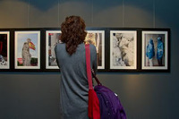
El fotógrafo Kepha Borde, pasó varios años alternando la docencia como profesor de fotografía, con el trabajo profesional. Desde hace algunos años se dedica en exclusiva a la parte profesional de la fotografía, abarcando todo tipo de productos fotográficos, desde la cobertura de eventos sociales, retratos, producto, o arquitectura, por citar algunos.

En su tiempo libre continua fotografiando como hobbie, como el mismo dice, y de ahí surge la exposición que ahora nos presenta, Fotografías de esculturas, maniquíes y fragmentos de paredes. En ella veremos una serie de imágenes en las que el fotógrafo, paseando con su cámara, observa en las esculturas y maniquíes su valor sustitutivo o de representación de los seres humanos, construyendo muchas veces una metáfora poética, a ratos romántica, de esta cotidianidad que nos envuelve, de modo sencillo, incluso fácil, pero casi invisible. Del mismo modo se exponen una serie de fotografías, de menor formato, que recogen fragmentos de paredes, inmediatas, sin artificios, y en las cuales encontramos una especie de historia, de argumento, como si supiéramos algo de los seres que habitan aquellos lugares que no llegamos a ver, y que Kepha recoge en una instantánea cuyo valor reside en la selección, en el encuadre del ojo enamorado de un fotógrafo intrigante.
5 de noviembre - 9 de diciembre 2011
Espacio Prado
ATENEO DE MADRID
Calle del Prado, 21
Madrid 28014
Nueva exposición con fotografías de Francesc Galí en Madrid-Barajas.
Wed, 23 Nov 2011 00:11:42 PST
Se aproximan fechas muy señaladas para los aeropuertos, especialmente para el Aeropuerto de Madrid-Barajas. Es muy facil coger cualquiera de los numerosos vuelos baratos a Madrid durante diciembre. Pero, a veces, la espera en ellos es muy anurrida. Por ello el Aeropuerto de Madrid-Barajas continúa fomentando la presencia del arte en sus instalaciones con la inauguración de una nueva exposición que presenta al público fotografías del artista catalán Francesc Galí.
En esta ocasión, la muestra elegida para ser expuesta en el Aeropuerto recoge, bajo el título de “Exilio”, una serie de fotografías realizadas con cámara lomográfica que, a través de una visión poética, invitan a la reflexión sobre la situación de todas aquellas personas que por distintos motivos se ven obligados a exiliarse de su país. Para la realización de este proyecto el artista ha utilizado la técnica del Pinhole o fotografía estenopeica. En palabras del propio artista, “el Pinhole ayuda a transmitir de una manera honesta y onírica los sentimientos. De esta manera, el resultado no son imágenes perfectas si no que les falta definición, lo que invita al espectador a transportarse al territorio de los sueños”.
La exposición, situada en la Sala VIP ‘La Revoltosa’ de la Terminal T4, podrá ser disfrutada por los pasajeros que pasen por esta sala hasta el 15 de enero de 2012.
El Museo del Prado cumple 192 años.
Sat, 19 Nov 2011 10:14:05 PST
El Museo del Prado celebra este sábado sus 192 años de historia con una apretada jornada cultural que incluye una amplia oferta de exposiciones, arquitectura y música. El edificio del Museo fue diseñado por Juan de Villanueva e inaugurado en 1819.
La entrada gratuita este día permitirá disfrutar también de varias novedades recientes, como: `La acróbata de la bola´, de Picasso, actual obra invitada, la exposición temporal `Las miniaturas del museo del Prado´, el proyecto audiovisual `El Prado por Francesco jodice´, así como las dos nuevas obras en exposición, `Aníbal vencedor´ de Goya, del depósito temporal de la Fundación Selgas-Fagalde, y la `obra de Antonio Joli´, donada hace unos días por la Fundación Amigos del Museo. No será gratuíta sin embargo la visita a la exposición `El Hermitage en el Prado´.
EXPOSICIÓN “CHIAROSCURO”. FOTOGRAFÍAS DE LA TOSCANA. HANNA KRESS.
Wed, 16 Nov 2011 13:02:05 PST
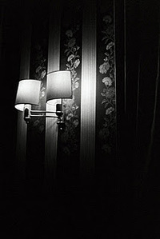
EXPOSICIÓN “CHIAROSCURO”. FOTOGRAFÍAS DE LA TOSCANA. HANNA KRESS.
RESTAURANTE “VIA APPIA”
C/ UNIÓN 10, ESQ. C/ VERGARA
METRO: ÓPERA
INAUGURACIÓN CON CÓCTEL: EL JUEVES 17 DE NOVIEMBRE A LAS 20:00
Berthe Morisot. La pintora impresionista en el Museo Thyssen-Bornemisza.
Tue, 15 Nov 2011 14:43:53 PST
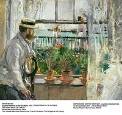
El Museo Thyssen-Bornemisza presenta, por primera vez en España, una exposición monográfica dedicada a la artista impresionista Berthe Morisot. Gracias a un importante acuerdo de préstamo, se exhibirán más de treinta obras procedentes del Musée Marmottan Monet de París, junto a un préstamo de la Fondation Pierre Gianadda de Martigny (Suiza), y a otras piezas pertenecientes a las colecciones Thyssen, que permiten descubrir una pintura elegante y luminosa a través de paisajes, escenas cotidianas e íntimos retratos femeninos.
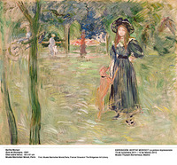
Casada con Eugène Manet, el hermano de Édouard Manet, Berthe Morisot (Bourges, 1841 - París, 1895) fue la primera pintora que decidió unirse al Impresionismo, el grupo más avanzado del arte de la época, participando en la mítica Primera Exposición Impresionista de 1874 y en otras posteriores. El suyo es un caso excepcional en la Historia del Arte del siglo XIX, porque es el de una mujer perteneciente a la alta burguesía francesa que consigue desarrollar una importante carrera profesional como artista, vinculada a un movimiento nuevo, que entonces provocaba rechazo.
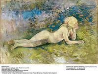
Preocupada de manera especial por el estudio de la luminosidad y el color, compartió también el interés de los demás pintores impresionistas por los reflejos de la luz. Su carácter independiente y con cierto punto de rebeldía se deja ver en su obra, que permite acercarse al papel de la mujer en la Francia de finales del siglo XIX. La representación del universo de los sentimientos femeninos fue un asunto tan permanente en la obra de Morisot que su amigo el poeta francés Paul Valéry solía decir de ella que «vivía su pintura» y «pintaba su vida».
Berthe Morisot. La pintora impresionista
Berthe Morisot: The Woman Impressionist
15.11.2011 - 12.02.2012.
Museo Thyssen-Bornemisza
Madrid
Exposición "Arranques" en el Espacio Naranjo.
Sun, 13 Nov 2011 01:21:55 PST
Un grupo de estudiantes de Bellas Artes de la Universidad Complutense de Madrid estrena 'Arranques'. La muestra estará abierta hasta el 18 de noviembre. Arranques se plantea como un ejercicio didáctico expositivo en el que los alumnos de primer curso de Grado de Bellas Artes proponen una muestra de sus trabajos en el espacio Naranjo. Esta exposición se acompaña de unas jornadas de debate y mesa redonda en la que se discutirá con varios profesionales del sector (profesores de la Facultad de Bellas Artes, artistas y gestores culturales) y los propios alumnos, cuestiones cercanas al ejercicio propuesto, tales como los mecanismos de exposición de la obra de arte y la conexión de la universidad con la práctica del arte profesional.
Del 11 al 18 de Noviembre
Horario: de 12 a 14 h y de 17 a 19 h (domingo cerrado)
Espacio Naranjo
C/Naranjo 33. 28039. Madrid. (Metro Tetúan)
Acceso libre
PROGRAMACIÓN ESPECIAL EN EL MARCO DE LA EDICIÓN 2011 DEL FESTIVAL JAZZ MADRID.
Thu, 10 Nov 2011 03:42:18 PST
El Institut français de Madrid, el Servicio Cultural de la Embajada de Francia en España y el Festival de Jazz de Madrid llevan más de 8 años desarrollando una estrecha colaboración. Este año, propondrán unos encuentros culturales ineludibles: por un lado, el programa presentará dos conciertos enmarcados en la Muestra Jazz Francia que nos brinda la oportunidad de escuchar dos grupos franceses, Romane y Manuel Rocheman en el Auditorio Conde Duque. Una conferencia musical también tendrá lugar en el Institut français de Madrid.
Por otro lado, se proyectarán tres películas del Director de cine Jacques Audiard que cuentan con bandas sonoras del extraordinario músico Alexandre Desplat en el Teatro del Institut français de Madrid. Esta muestra pretende repasar la fértil relación artística entre dos grandes creadores del momento. Jacques Audiard es Director de cine. Su cuarta película De Latir mi corazón se ha parado ganó varios Premios César como mejor película, mejor Director, mejor guión, mejor banda sonora y mejor fotografía. Un profeta fue la película que le otorgó aún más fama. Desde hace unos 20 años, el compositor Alexandre Desplat ha realizado unas 50 bandas sonoras para películas. Ha recibido premios por las bandas sonoras de: El Escritor de Roman Polanski, El Discurso del Rey y El árbol de la vida de Terrence Malick.
Marta Argüelles en la galería de Arte Amador de los Ríos.
Thu, 10 Nov 2011 03:37:17 PST
Interesante exposición de la artista Marta Argüelles en la galería de Arte Amador de los Ríos.
AMADOR DE LOS RIOS
C/ Fernando el Santo, 24
28010 Madrid
www.galeriaamadordelosrios.com
Exposición: Joan Maragall. La palabra iluminada.
Fri, 04 Nov 2011 01:24:50 PDT
La Biblioteca Nacional de España acoge la exposición Joan Maragall, la palabra iluminada en la que se abarca la trayectoria vital de Joan Maragall (1860-1911) desde diferentes puntos de vista, siendo su eje principal la creación poética y tratando también otras facetas de la figura del autor: la periodística, la correspondencia con escritores e intelectuales de Cataluña y España, el ensayo literario y de pensamiento y la traducción.
La exhibición coincide con la celebración del Año Maragall que conmemora los cien años de la muerte del autor y el 150 aniversario de su nacimiento. Concebida dentro de un programa de itinerancia, la muestra llega a la Biblioteca Nacional de España tras haber sido acogida en el Palau Moja de su Barcelona natal.
La muestra está comisariada por Jordi Castellanos, historiador de literatura, catedrático de Filología Catalana en la Universitat Autónoma de Barcelona y especialista en modernismo catalán. La exposición se divide en diferentes ámbitos que pretenden contextualizar al escritor dentro de su época, vinculándolo directamente con el modernismo, acercándonos a su esfera más privada con su tea time donde el autor celebraba tertulias en un ámbito más familiar, enseñándonos su faceta poética, tratando la relación España-Cataluña a través de su propia figura y la de Unamuno, aludiendo a los sucesos de la Semana Trágica y finalmente aborda sus últimos años analizándolos a través de una de sus mejores obras El canto espiritual.
La exposición realiza un recorrido por la vida y obra de Joan Maragall. Se presentan diez poemas o fragmentos como plasmación de la relación empática del poeta con su entorno: el poema se construye sobre la vivencia del amor, de la naturaleza, de la vida ciudadana, del mito y la imaginación, de las frustraciones y esperanzas colectivas, y de la vida en toda su diversidad.
Martes a sábados: de 10.00 a 21.00 y los domingos de 10.00 a 14.00.
Último pase 30 minutos antes del cierre.
Desde el 21 de septiembre al 13 de noviembre de 2011
Sala Hipóstila de la Biblioteca Nacional de España
La exposición fotográfica 'Rusia desde la ventana del tren', en el invernadero de Atocha.
Tue, 01 Nov 2011 10:48:21 PDT
El invernadero de la estación de Atocha de Madrid acoge hasta el próximo 20 de noviembre la exposición 'Rusia desde la ventana del tren', que se realiza en el marco del año de Rusia en España, según ha informado Russian Railways en una nota.
Esta exposición es un proyecto conjunto de Russian Railways SA y el fotógrafo Anton Lange, en la que pretenden mostrar un retrato actual de Rusia a través del objetivo del viajero.
En la exposición se podrán ver más de 120 instantáneas tomadas durante el viaje que el grupo creativo encabezado por Anton Lange realizó entre 2006 y 2009 por las regiones rusas de Siberia, Extremo Oriente, la isla de Sajalín, el Cáucaso, los Urales, la región noroccidental, el lago Baikal y el Volga, entre otras.
EXPOSICIÓN "OBSERVADOS". VOYEURISMO Y VIGILANCIA A TRAVÉS DE LA CÁMARA DESDE 1870.
Wed, 26 Oct 2011 13:28:44 PDT
La Fundación Canal Isabel II presenta esta excitante exposición. La complacencia de ver sin ser visto. La mirada indiscreta en torno al erotismo, la violencia, el miedo, la muerte, el acecho a los famosos... Intromisión y una cámara son el eje de esta exposición de ciento setenta fotografías y dos piezas audiovisuales.
Trabajos de algunos de los fotógrafos más famosos de la historia como Brassai, Cartier-Bresson, Walker Evans, Robert Frank o Dorothea Lange muestran cómo el concepto de intimidad varía con el tiempo y cómo la vigilancia, en cualquiera de sus vertientes, está cada vez más presente, y de forma más natural, en nuestras vidas.
Exposición organizada por el San Francisco Museum of Modern Art y la Tate Modern. Patrocinada por Trellis Fund y la Phyllis C. Wattis Foundation
Del 27 de octubre de 2011 al 8 de enero de 2012
Exposición "La Caballería Roja. Creación y poder en la Rusia soviética de 1917 a 1945".
Mon, 07 Nov 2011 00:36:43 PST
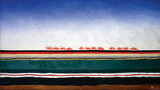
La Caballería Roja. Creación y poder en la Rusia soviética de 1917 a 1945 es un proyecto que engloba una gran exposición y una serie de actividades como cine, conciertos, propuestas escénicas y conferencias. Una visita imprescindibles si vienes con cualquier vuelo barato a Madrid.
La exposición se centra en los años que van desde la marcha de la primera caballería roja en la Guerra Civil (1918-1921) a la intervención de la caballería roja en la Segunda Guerra Mundial (1941-1945). El título alude también a dos obras maestras homónimas de la época: el libro de relatos de Isaak Bábel y la famosa pintura de Malévich, que abre la exposición.
La Caballería Roja presenta el panorama artístico-cultural de los años 20 y 30 en la Rusia soviética en cuanto a la colaboración, voluntaria y entusiasta en algunos casos, impuesta y forzada en otros, de los creadores (escritores, músicos, artistas, directores teatrales y cineastas) en la construcción del socialismo (sus experimentos, sus compromisos, sus sufrimientos) y analiza las políticas culturales de Lenin, Stalin y su entorno.
La Caballería Roja es una especie de viaje desde la energía artística de la vanguardia que acompañó el estallido y los primeros pasos de la revolución (y sus tanteos y estrategias para conectarse con la nueva realidad social que se estaba construyendo) hasta la aniquilación de cualquier talento creativo por parte de Stalin al final de los años 30. Reúne materiales muy diversos, desde obras maestras de la vanguardia hasta algunas piezas significativas en la estética del realismo socialista, desde manuscritos de los poetas de la edad de plata -Ajmátova o Mandelshtam-, las sátiras de Bulgákov o Olesha y las obras de los llamados compañeros de viaje -Bábel, Pasternak o Pilniak-, hasta las novelas heroicas que se escribieron para ensalzar las grandes obras de los planes quinquenales.
A todos los que no viváis en Madrid, no lo dudéis coger un vuelo barato y visitar la Casa Encendida, situada en Ronda de Atocha, muy cerca de la Estación de Tren.
La Casa Encendida
Del 7 octubre de 2011 al 15 de enero de 2012.
Próxima exposición de Martin Creed en la Sala Madrid-Alcalá 31.
Sun, 23 Oct 2011 12:24:35 PDT
La exposición Things/Cosas, del artista británico Martin Cree, uno de los artistas internacionales más interesantes de su generación, que combina su faceta de artista plástico con su grupo de música, formado en 1994.
Sus esculturas, instalaciones, vídeos y dibujos están inspirados en objetos, palabras, y sonidos de la vida diaria, en lo cotidiano. Creed está constantemente investigando la naturaleza básica de las cosas, creando un mundo de clasificaciones, categorías y excepciones inesperadas a través de objetos, palabras y sonidos.
El espacio expositivo será una gran sala donde Creed mostrará obra concebida para la ocasión, como sus nuevas pinturas murales, combinándolas con piezas tan conocidas como Work No. 88 A sheet of A4 paper crumpled into a ball (Una hoja de papel A4 hecha una bola), 1995, o su vídeo Work No. 670 Orson and Sparky, 2007, nunca hasta ahora presentadas en España.
Martin Creed se dio a conocer por la utilización de materiales simples para crear un mundo donde la realidad parece transformada, como la masilla azul adhesiva pegada en una pared en Work No. 79 Some Blu-Tack kneaded, rolled into a ball and depressed against a wall (Un poco de Blu-Tack amasado, hecho una bola y aplastado contra un muro), 1993, o una hilera de clavos ordenados de mayor a menor en Work No. 701 Nails (Clavos), 2007.
Sus trabajos son a veces el resultado de una rigurosa fórmula, presentados en forma de instrucciones: Work No. 150 Half of anything multiplied by two (La mitad de cualquier cosa multiplicada por dos), 1999, o frases tan simples escritas en signos de neón como Work No. 251 Things (Cosas), 2000. Estos trabajos que parecen simples gestos, a veces con un sentido del humor absurdo, pueden conseguir cambiar la percepción del espectador sobre los objetos y materiales que le rodean en su entorno diario.
La exposición podrá visitarse del 15 de diciembre al 26 de febrero de 2012, en la Sala Comunidad de Madrid-Alcalá 31 (Calle Alcalá, 31. Madrid), de martes a sábado, de 11 a 20.30 horas; y domingos y festivos, de 11 a 14 horas.
Madrid Premiere Week.
Wed, 23 Nov 2011 00:37:23 PST
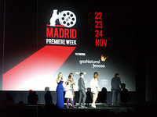
Ayer tuve la suerte de asistir a ver la película 'Maktub', que ha sido la encargada de inaugurar la 'Madrid Premiere Week' en los cines Callao de Madrid, en la Gran Vía madrileña.
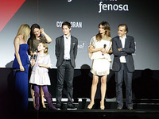
La película gusto mucho y fue intensamente aplaudidad. Muchos de sus actores asistieron al evento.
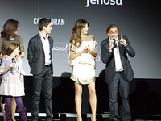
Fotografías paseando por Madrid.
Sun, 20 Nov 2011 14:12:32 PST
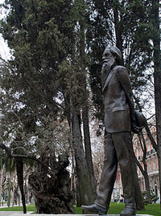
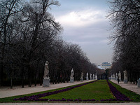
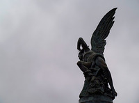
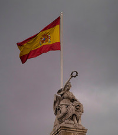
Una visita a la Biblioteca Nacional.
Fri, 18 Nov 2011 12:16:59 PST
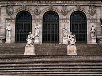
Fiesta de clausura de la expo "Evanescent Lao", el viernes a las 20h.
Wed, 16 Nov 2011 12:48:50 PST
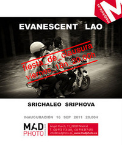
Fiesta de clausura de la expo "Evanescent Lao", el viernes a las 20h.
Madphoto
http://www.madphoto.es/
Ángel Puech 11
28039 Madrid_España
Metro_Tetuán
Bus_11, 44 y 49
En el Caixaforum.
Sun, 13 Nov 2011 02:57:58 PST
Visitando nuevamente el Caixaforum para ver tranquilamente la exposición de Delacroix.
El escultor italiano Marino Marini en Conde Duque.
Sun, 13 Nov 2011 01:18:53 PST
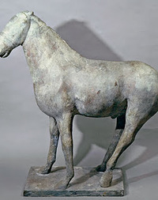
Es la primera vez que la obra de Marini, considerado uno de los grandes artistas de la escultura figurativa del siglo XX llegue a Madrid, en una exposición que recorre su obra y sus temas principales.
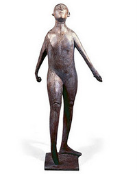
Marino Marini (Pistoia, 1901- Milán 1980), es uno de los mayores exponentes del arte moderno italiano del siglo XX, sin el que no se podría entender la evolución del arte en nuestros días, siendo su influencia esencial y definitiva para los escultores de los siglos XX y XXI. Heredero de la tradición etrusca, en sus esculturas está latente la huella de siglos de mitología. Tal vez nacer en la Toscana, cuna de los etruscos desde el siglo VI a.C., fue lo que definió su estilo.
En esta exposición antológica, la primera que se presenta en Madrid, se ha logrado crear una yuxtaposición de piezas que muestran todos los lenguajes artísticos que el maestro dominó. A través de setenta y cinco obras (25 esculturas, 10 pinturas y 40 dibujos) nos adentramos en el universo artístico de Marini, en su lenguaje, que es el de su tiempo, pero reinventando a los clásicos, dotando a sus obras de una modernidad innata que las hacen ser un legado de la época en la que se crean.
Sus dibujos presentan un trazo firme y puro y sus óleos están inundados por los colores del mediterráneo. Pero son sus esculturas en bronce, las que le convierten en un maestro de la Historia del Arte. Caballos, jinetes, guerreros y Pomonas, la deidad etrusca símbolo de la fertilidad de la tierra, le darán a conocer internacionalmente. Figuras complejas e imponentes llenas de carga simbólica que sintetizan de una forma audaz toda su producción.
EXPOSICIÓN "UN SOLO CAMINO".
Thu, 10 Nov 2011 03:39:24 PST
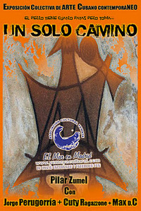
Tres artistas cubanos contemporáneos, Jorge Perugorría ( RECONOCIDO ACTOR Y DIRECTOR DE CINE CUBANO Y DESDE HACE UN TIEMPO ARTISTA DE LA PLÁSTICA CON UNA AMPLIA OBRA EN SU HABER) , Gustavo Echevarría/Cuty Ragazzone ( LAUREADO PINTOR Y FOTÓGRAFO CUBANO) Y Max D.C. ( GRABADOR, PINTOR Y DISEÑADOR GRÁFICO )
Son reunidos en esta exposición por la mano creadora de puentes de Pilar Zumel, ( PRESIDENTA DE LA ASOCIACIÓN CULTURAL YEMAYÁ) un espacio multicultural y que con vida propia mantiene una programación de eventos en favor de la difusión de la cultura cubana y sus creadores en ultramar y al apoyo general a todo proyecto cultural de cualquier parte del mundo que llegue a su espacio de la calle Calatrava 16, traído por la olas de Yemayá.
Por segunda vez la unidad de Cultura del Distrito Centro del Ayuntamiento de Madrid, cede el espacio de la Galería de Arte del Centro Cultural "La Paloma" ubicado en la Puerta de Toledo para inaugurar este jueves 3 de Noviembre a las 18:00 HRS " UN SOLO CAMINO" muestra conjunta de estos tres artistas y la Asociación Cultural Yemayá.
Porque como versa le proverbio afrocubano de los ODDUN S DE IFÁ... TIENE EL PERRO CUATRO PATAS... PERO VA POR "UN SOLO CAMINO".... Así como la afro descendencia transciende el color de la piel y marca una clara influenclas lineas de cada obra creada... es en este caso ÚNICO el camino del buen arte en cada obra creada para el disfrute de todos...
DIRECCIÓN DE LA GALERIA DE ARTE "LA PALOMA"
CALLE TOLEDO Nº 108, PUERTA DE TOLEDO
MADRID 28005
HORARIOS DE LUNES A VIERNES DE 10 A 14 HRS Y DE 17 A 20 HRS
9 de noviembre de 2011. Día de la Almudena, fiesta de Madrid.
Mon, 07 Nov 2011 00:45:04 PST
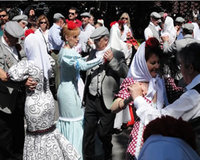
Ya falta poco para uno de los días más importantes del año en Madrid, Fiesta de la Almudena, patrona de la ciudad. Hay gran cantidad de actos, la fiesta inicia por la mañana con la celebración de una misa por la mañana luego se llevará a cabo la ofrenda floral. Posteriormente la imagen de la Virgen de la Almudena saldrá en procesión por las calles de Madrid
La Virgen de la Almudena es trasladada desde la Catedral a las 10,30 horas, por la c/ Mayor, hacia la Plaza Mayor, para celebrar la Eucaristía en su honor; la Virgen va acompañada por los miembros de las Congregaciones de la Almudena. Como novedad, este año la megafonía instalada en la c/ Mayor permitirá que los fieles recen el Rosario durante el traslado de la imagen de la Virgen.
Por las calles de Madrid. El recorrido de la misma es: salida por la calle de la Sal para continuar por Postas, Esparteros, Mayor, Puerta del Sol, Arenal, Travesía de Arenal, Mayor, Bailén y llegada a la Plaza de la Almudena para entrar en la Catedral.
Durante todo el día los tradicionales participantes de las fiestas, chulapos y chulapas, gozarán de una serie de actividades realizadas en honor a La Almudena.
'El Hermitage en el Prado', excepcional exposición en el Museo del Prado.
Tue, 01 Nov 2011 12:18:49 PDT
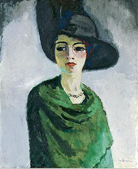
El 8 de noviembre el Museo del Prado abrirá al público la fabulosa exposición 'El Hermitage en el Prado', que mostrará a través de ciento veinte obras la gran variedad y riqueza de las colecciones del museo ruso -desde el siglo V a.C. hasta el siglo XX, pasando por sobresalientes piezas de arqueología, artes decorativas y los magníficos fondos de pintura, escultura y dibujo- que hacen de él uno de los primeros centros de arte del mundo. La exposición constituye una ocasión única y extraordinaria al tratarse de la primera vez que se muestra fuera del Hermitage una selección tan importante y numerosa de obras de sus excepcionales colecciones.
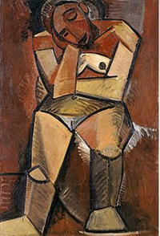
Compuesta por casi noventa obras de las célebres colecciones de pintura, dibujo y escultura del museo ruso, junto a una cantidad similar de piezas correspondientes a sus extensas e incomparables colecciones arqueológicas y de artes decorativas, además de trajes de época y mobiliario, la exposición 'El Hermitage en el Prado' completa el intercambio de colecciones sin precedentes acordado entre los dos grandes museos, español y ruso, e iniciado a principios de año con la presentación de 'El Prado en el Hermitage' en San Petersburgo, exposición que contó con la colaboración de AC/E y se convirtió en la de mayor éxito de público en la historia del Hermitage con más de 600.000 visitantes. Ambos proyectos se inscriben en el marco de la celebración del año Dual España-Rusia 2011
Ubicado en un conjunto de edificios palaciegos al lado del río Neva y, sobre todo, en el Palacio de Invierno que fue la residencia en el siglo XVIII de la Zarina Catalina la Grande, el State Hermitage Museum de San Petersburgo es uno de los más grandes y espectaculares museos del mundo. Sus colecciones abarcan el Egipto de los faraones, las culturas siberianas, el mundo grecorromano y llegan hasta el arte renacentista, la escultura neoclásica, y la pintura de Matisse y Picasso. Es uno de los poquísimos museos que, fruto del coleccionismo de los zares, empezando con Pedro el Grande (1672-1725), así como del coleccionismo privado de vanguardia del siglo XX, se puede considerar verdaderamente enciclopédico.
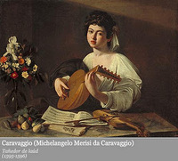
La exposición, comisariada por Mikhail Piotrovsky, director del Hermitage, convertirá las salas de exposiciones temporales de la ampliación del Prado en un “pequeño Hermitage” brindando al público la excepcional oportunidad de conocer no sólo las magníficas obras de arte y arqueología que conserva el gran museo ruso y cuya amplia selección dará cuenta de la riqueza de sus colecciones, sino también la historia del Hermitage. Con este fin, serán los retratos de los emperadores, Pedro I, Catalina II y Nicolas I; los cuadros de las espléndidas vistas de interiores del palacio y sus alrededores e incluso una selección de muebles y trajes de corte, los que recibirán al visitante al inicio de la exposición.
Por su parte, entre las grandes obras maestras de la pintura que formarán parte de esta muestra destacan ejemplos tan notables como el San Sebastián de Tiziano, el Tañedor de Laúd de Caravaggio, el San Sebastián de Ribera, y el Almuerzo de Velázquez. También tendrán cabida dos obras de la importante colección de Rembrandt que atesora el Hermitage, Retrato de un estudioso y Caída de Haman. De su colección de dibujos, vendrán obras de Durero, Rubens, Watteau e Ingres y, entre las esculturas, pueden destacarse el boceto en terracota de Bernini para el Éxtasis de Santa Teresa, y una de las obras maestras en mármol de Antonio Canova, la Magdalena penitente. La exposición contará también con notables ejemplos de las célebres colecciones de pintura impresionista y post-impresionista del museo ruso, en la que estarán representados Monet, Cézanne, Renoir, Gauguin y Matisse, éste último con dos obras, Juego de bolas y Conversación. De Picasso se incluirán tres lienzos, entre ellos Mujer sentada y Bebedora de absenta y completarán la selección dos obras rusas de la vanguardia abstracta, la Composición VI de Kandinsky y el misterioso Cuadrado negro de Malevich.
Museo del Prado
Madrid
8 de noviembre de 2011 – 25 de marzo de 2012
Exposición: Grafistas. Diseño Gráfico Español 1939-1975, en el Museo Nacional de Artes Decorativas
Fri, 28 Oct 2011 06:48:02 PDT
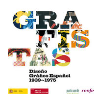
El Ministerio de Cultura presenta un recorrido por el corpus de trabajo más significativo de los pioneros del diseño gráfico español. En la muestra se puede apreciar, de forma atractiva y didáctica, cómo el diseño gráfico ha trascendido los ámbitos profesionales comunicativos para convertirse en una pequeña historia de la transformación de la España contemporánea.
Entre los creadores cuyos diseños pueden verse en la exposición destacan nombres como Alexandre Cirici Pellicer, Manolo Prieto, Ricard Giralt Miracle, Josep Renau, Daniel Gil, Joan Brossa o Josep Artigas, con cerca de 300 trabajos que recorren los ámbitos de la cultura, el contexto, lo institucional, el comercio y la cronología. Hasta la fecha no se habían mostrado obras e información suficiente para conocer las trayectorias y la dura coyuntura histórica en la que estos creadores trabajaron. Esta exposición cubre así una carencia documental, ubicando por vez primera todos estos datos dentro del contexto internacional y haciéndonos ver lo que los pioneros del diseño gráfico español supusieron para las generaciones posteriores de españoles: la apertura de una puerta a una nueva manera de relacionarse con la comunicación visual y, al mismo tiempo, la posibilidad de disfrutar, a través de sus diseños, de una estética atractiva.
La exposición incluye el diseño editorial (colecciones de libros, periódicos, revistas, cabeceras de diarios), el diseño tipográfico, logos y marcas de empresa, carteles de todo tipo, material discográfico, gráfica de comercios, material gráfico de productos farmacéuticos, felicitaciones navideñas, vallas publicitarias, sellos de correos, calendarios, tarjetas y papel de cartas de autopromoción, displays, collages, esculturas y recortables...
Museo Nacional de Artes Decorativas
C/ Montalbán, 12
Fecha: Desde el 28/10/2011 hasta el 29/04/2012
Horario: Martes a sábados, 9.30-15.00, y jueves, también 17.00-20.00 h; domingos y festivos, 10.00-15.00 h. Lunes, cerrado.
La escultura aérea de Viviane Brickmanne en la galería Atalante
Wed, 26 Oct 2011 01:07:23 PDT
Una veintena de esculturas de la artista belga (aunque residente en España desde hace muchos años), dialogan con los tapices flamencos colgados de las paredes de la galería Atalante. Piezas que muestran un personal universo poético a través de figuras estilizadas y líneas ascendentes, sugiriendo el vuelo, en consonancia con la definición de William Blake, “El vuelo es la libertad del mundo….el pájaro es el aire libre personificado”.
Las esculturas se instalan bajo el concepto general de “Aire”, aludiendo a una cierta poética del espacio, en referencia al "Ensayo sobre la imaginación del movimiento", del "El aire de los sueños", de Gaston Bachelard. Donde circula el aire La obra escultórica de Viviane Brickmanne ha evolucionado desde unas primeras obras en barro cocido, con potentes alas y picos, no figurativas pero con reminiscencias antropomorfas (Crucificado, Albatros, El Desdichado), hasta sus primeras piezas de bronce (Aullido, Vuelo), más estilizadas y aéreas, con líneas más elaboradas y pulidas, para reforzar la idea de pureza formal. En sus siguientes esculturas (Pájaro durmiente, El Pico del Cóndor, Libélula) elimina las alas buscando, a través de un juego de líneas, sugerir un movimiento dinámico ascendente; se rompe la estructura compacta introduciendo aperturas para dejar circular el aire, como referencia a la idea del soplo vital de François Cheng. En otras piezas (Dualidad, Cobra, Silbido, Llamada) la artista sigue ahondando en la estilización de la figura y en la simplificación de las formas, eliminando todo elemento superfluo a través de líneas depuradas, en bronce pulido.
El siguiente paso (las piezas Metamorfosis, Vuelo imaginario, La mirada de arriba, Alción), es una ruptura en la forma, no así en el contenido, ya que permanece la idea del aire como concepto, aunque ya no haya alas o espacios que dejen circular el aire. La forma pierde aquí el pulido y el rigor de la línea perfecta y se hace más áspera, con referencias a materiales primarios como la madera. Es el yin después del yang. Estas últimas piezas responden al deseo de buscar una representación diferente y de mayor soltura, con menos limitaciones o ataduras. Siguen siendo importantes el ritmo y la construcción, pero no compacta ni tan elaborada en apariencia.
La exposición cuenta con la colaboración con la Delegación de Flandes (Embajada de Belgica) en España.
Galería Atalante
Salustiano Olózaga, 3
Madrid
Exposiciones sobre el cine en el Matadero Madrid y el Teatro Fernán Gómez.
Sun, 23 Oct 2011 12:34:16 PDT
Durante toda la semana Matadero Madrid acoge ciclos de proyecciones y el Centro Fernando Fernán Gómez propone una exposición dedicada a los premios Goya. La agenda trae también los coletazos acústicos del Conde Duque con las actuaciones de “La Bienquerida” (hoy jueves, 20 de octubre), “Las Pequeñas Cosas” (viernes, 21 de octubre) y “Calocando” (sábado, 22 de octubre).
La exposición propone al visitante un viaje emocional en el tiempo, en el que aparecen directores, intérpretes o técnicos que cuando nacieron los Goya ya estaban consagrados -como Carlos Saura, Luis García Berlanga, Fernando Fernán Gómez o Gil Parrondo-, así como los que han ido convirtiéndose en nuevas figuras en los últimos veinticinco años -como Alejandro Amenábar, Javier Bardem, Penélope Cruz o Alberto Iglesias. También figuran géneros habituales de nuestro cine, como el histórico o la comedia, junto a otros muy poco explorados anteriormente, caso del fantástico y de terror o del thriller. Asistimos a la internacionalización de nuestro cine de la mano de directores como Pedro Almodóvar o Fernando Trueba, así como a la progresiva incorporación de la mujer a los aspectos más creativos de la autoría cinematográfica, con nombres tan destacados e interesantes como los de Icíar Bollaín o Isabel Coixet.
Más información: http://www.mataderomadrid.org/